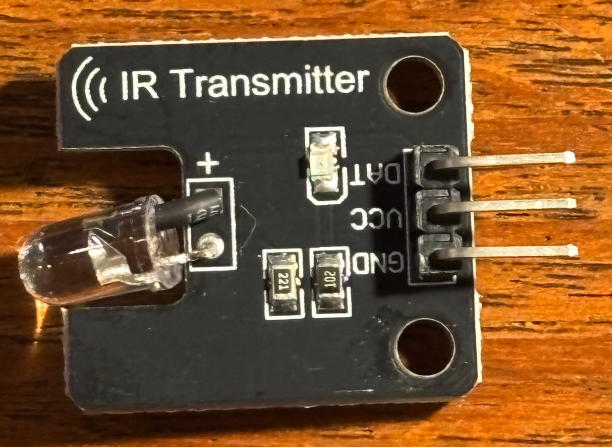
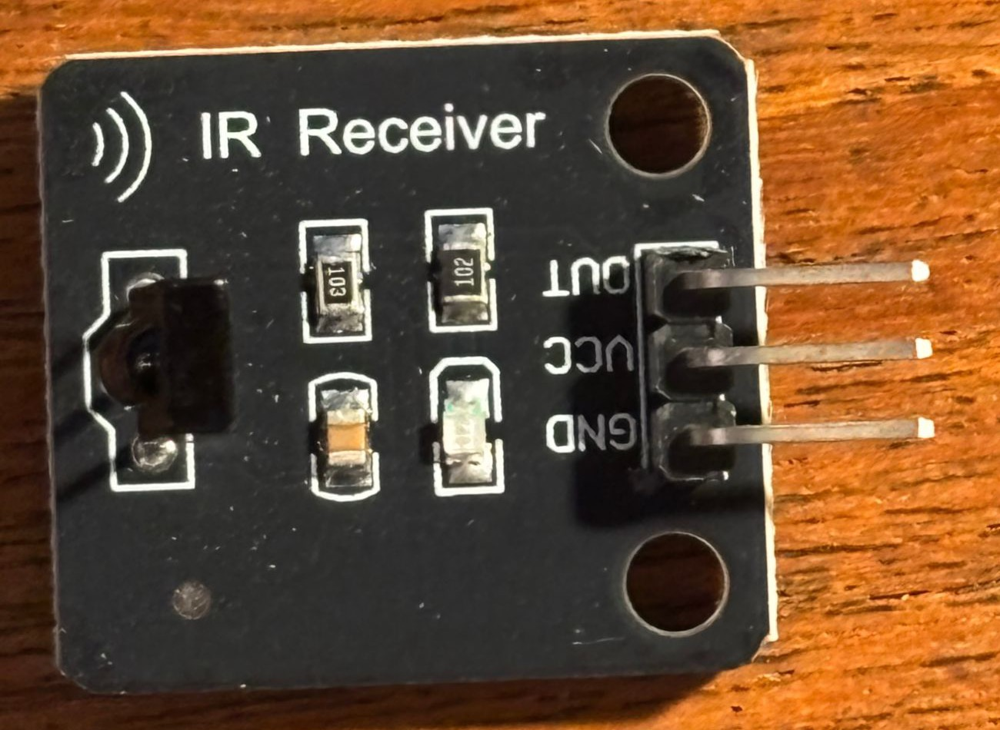

S2
38 kHz IR transmitter + receiver modules
untested×1 eachTV-remote IR pair from AliExpress (listing). The receiver only reacts to IR modulated at 38 kHz. The transmitter has no oscillator, so the controller generates the carrier on the data pin.
Both boards, measured:
- PCB 23.6 × 21 × 1.6 mm. The 23.6 mm runs from the optics edge to the header edge.
- Two 3.2 mm mounting holes (M3 clearance) in the header-edge corners, 15.0 mm center to center. Each rim sits 1.5 mm from the edges, so the centers are 3.1 mm in.
- 3-pin right-angle 0.1" header. The optics face the opposite edge.
Transmitter, DAT / VCC / GND:
- 5 mm 940 nm IR LED lying in an edge notch.
221(220 Ω),102(1 kΩ), indicator LED, no transistor.DATdrives the IR LED directly, about 10 mA from a 3.3 V pin.- Range: the seller claims 1.3 m at 5 V. A buyer review reports 30 cm from an ESP32 at 3.3 V.
Receiver, OUT / VCC / GND:
- VS1838 receiver (per the listing), standing upright, dome facing the edge.
103(10 kΩ),102(1 kΩ), capacitor, indicator LED.OUTis active-low and pulled up toVCC. Power it from 3.3 V for the Pi (C1) or XIAO (C3), whose pins aren't 5 V tolerant. The VS1838B is rated 2.7–5.5 V.
Driving it:
- XIAO (C3): RMT peripheral. The ESP-IDF example
peripherals/rmt/ir_nec_transceiversupports the ESP32-C5. - Pi (C1):
gpio-irandgpio-ir-txoverlays, withir-keytableandir-ctl. - Uno (C2): IRremote library.
To verify:
- Ring out the transmitter:
DAT→ 220 Ω → IR LED, and whatVCCconnects to - Receiver at 3.3 V: decode a TV remote on the XIAO
- Range test, transmitter to receiver
- For a mount: component heights above the PCB



